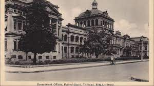
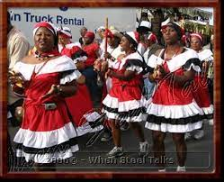
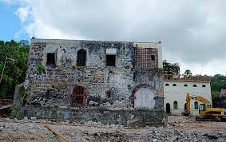
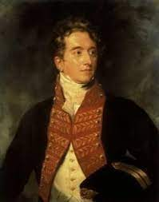
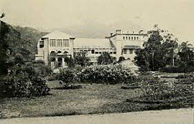
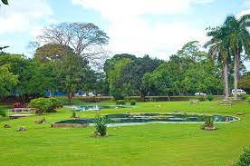
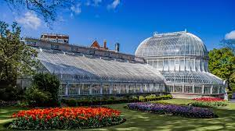
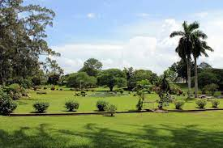
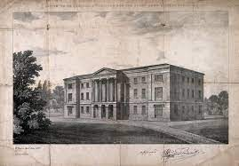

The British abolished the slave trade in 1807 but the British Royal Navy were ordered to patrol the African West Coast and prevent the illegal transportation of slaves by British ships. As a result, a number of Africans were freed and some of them were brought to Trinidad.

2
The capital was intentionally kept uninhabited at one point
To avoid drawing attention of pirates and other enemies, the Spaniards kept Trinidad unpopulated, keeping the island as just a port to keep Spanish ships safe in the Gulf of Paria. They spread rumours that Trinidad was dangerous

3
The 'jamette society' originated in Port in Spain
At one point, the streets of east Port-of-Spain were known as the ‘French Shores’, and those who inhabited them were known as jamettes(‘diamètre’). The term referred to those outside the circle of polite society.

4
Everyone and everything was thrown in prison
The Royal Gaol on upper Frederick Street was completed in 1812 where criminals, along with debtors, the insane, and even animals were thrown into it.

5
Governor Woodfood passed an interesting law to protect the streets of Port-of-Spain
Sir Ralph Woodford was keen on modernising the face of Port-of-Spain. Sidewalks were constructed and paved with gravel. To preserve the new streets, a law was passed in 1824 forbidding the keeping of pigs in the city

6
The first primary school for boys
The first primary school for boys was opened in Port-of-Spain in April 1823 followed by a primary school for girls in 1826. .

7
Queen's Park Savannah was initially intended for cattle
s The area, originally called 'The Savannah' was cleared ‘for the recreation of the townsfolk and for the pasturage of cattle’. It was later officially changed to 'The Queen's Park Savannah' in 1845.

8
The Botanic Gardens had Far East influences
The Governor bought additional land from the Peschier estate at St. Anns, which was constructed for the new Government House and the Botanic Gardens. Botanist David Lockhart was hired to design the Botanic gardens

9
The Queen's Park Savannah was used for many sporting events
In addition to being an open pasture, the Savannah provided the residents of the town with their first golf course and the game was played with the grazing cows and running horses.

10
Before there was St. Ann’s, there was Belmont Asylum
The Belmont Asylum was founded in 1851 and was located on Circular Road, opposite to where the secondary school is today. It was eventually moved to St. Ann’s and became known as the ‘Mental Hospital’.